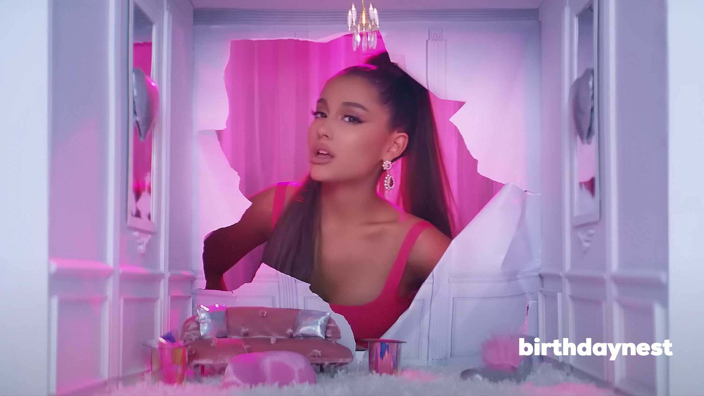
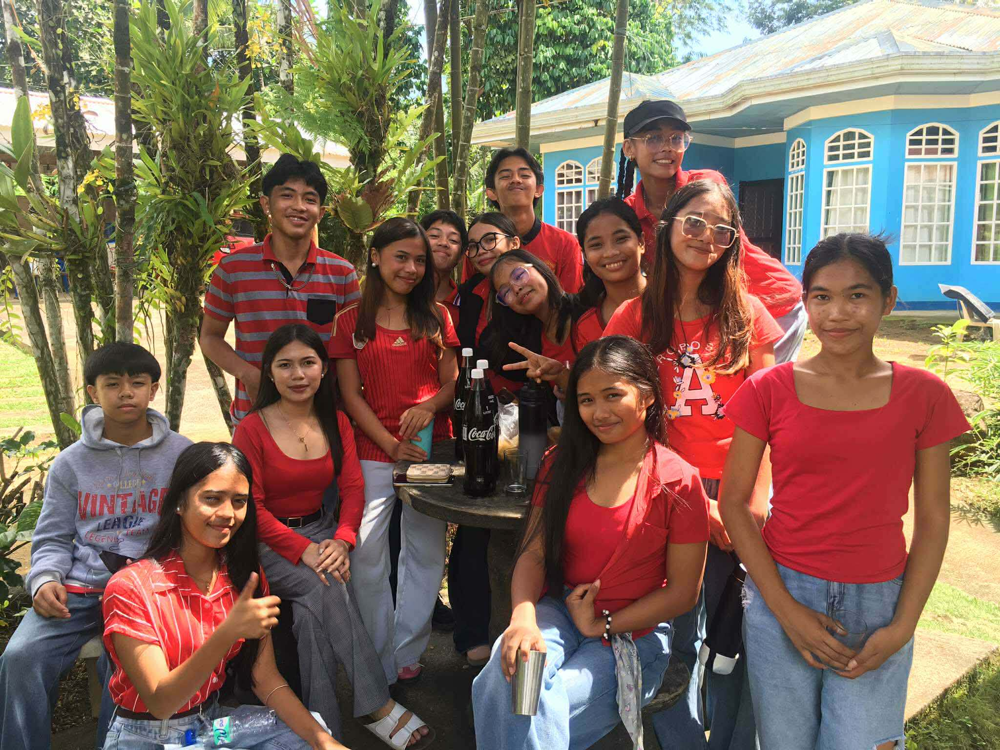
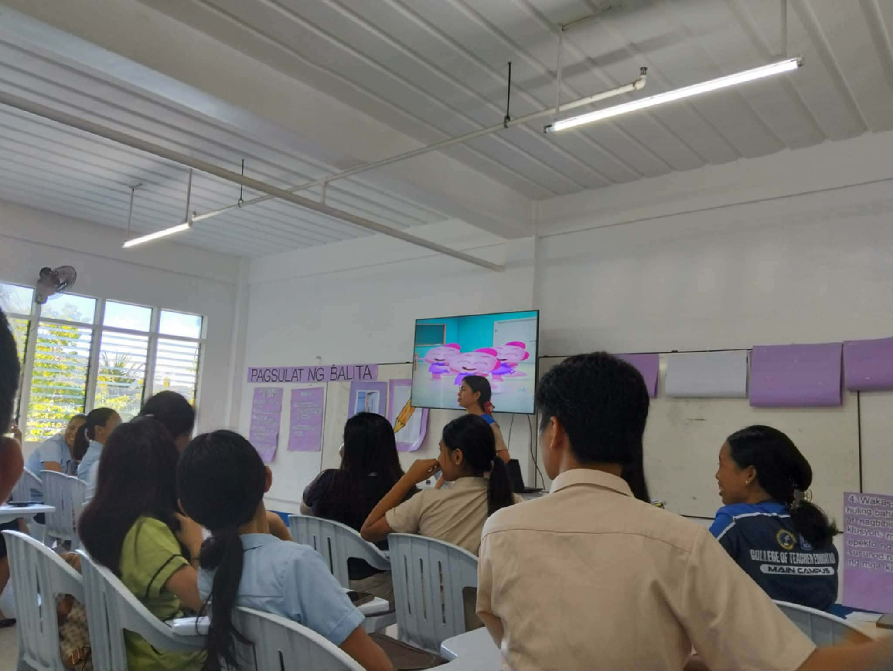
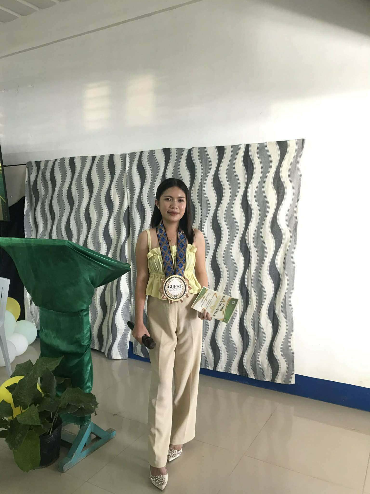
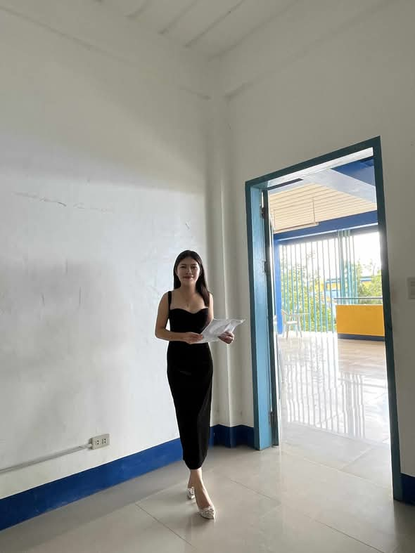
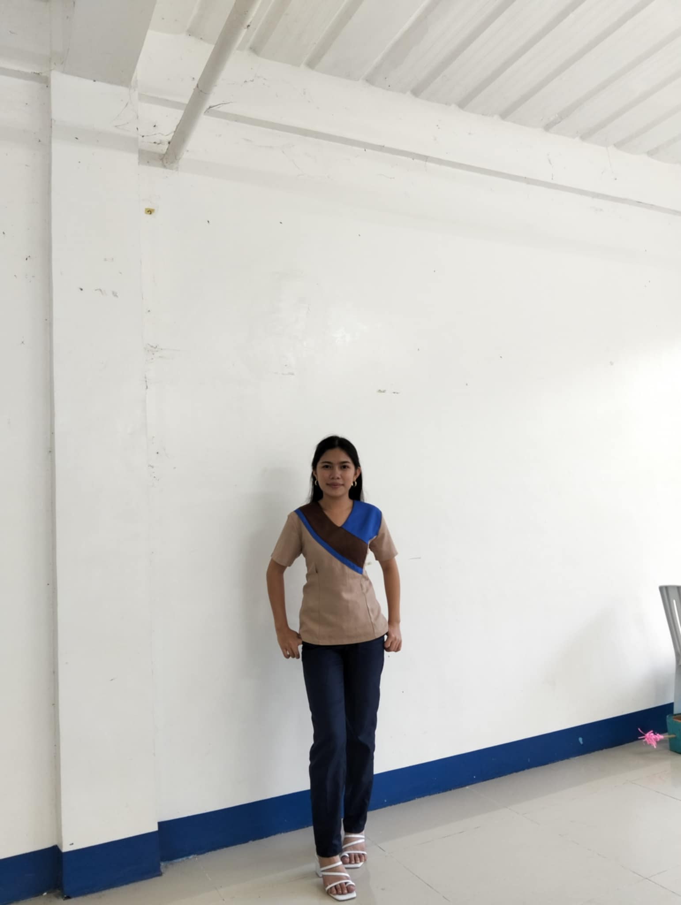

My Teaching Soundtrack ♫

CLICK TO PLAY
CLICK TO PLAY

CLICK TO PLAY
"Teaching is not just sharing knowledge, but inspiring minds, building dreams, and making learning meaningful for every student."

I served as the President of the Catholic Youth Ministry for three years. This leadership role allowed me to guide and inspire fellow youth members in various spiritual and community activities. Through this experience, I developed strong leadership skills, a sense of responsibility, and a deeper commitment to service and faith.

In the subject Facilitating Learner-Centered Teaching, I was recognized as the Best Demonstrator. This achievement reflects my ability to effectively apply learner-centered strategies and actively engage students in the teaching-learning process. Through this experience, I was able to showcase my skills in instructional delivery, classroom management, and the implementation of interactive and student-focused approaches to learning. You sent

In the subject SANAYSAY AT TALUMPATI, I had the opportunity to serve as the host or emcee during a Graduation Ceremony.

In the subject PANITIKAN NG REHIYON, I also had the opportunity to serve as a host in a podcast activity. This experience allowed me to facilitate meaningful discussions and express ideas clearly and confidently. Through this activity, I was able to strengthen my communication skills, deepen my understanding of regional literature, and enhance my ability to engage an diverse audience in an academic setting.

I Love Teaching. As a student teacher, I am passionate about guiding learners, sharing knowledge, and creating meaningful learning experiences. Teaching allows me to inspire students and help them reach their full potential.
